Data Processing
Condensing cross-condition columns
Now let's take a quick look at some of the columns in our data. The way we can tell the difference between data from participants in the "prosocial" vignette condition and participants in the "non-prosocial" vignette condition is that their data is in separate columns. So, in each of the response columns, rows where the subject belongs to the other condition, the cell is empty.
We'll take advantage of this to "merge" the columns. We take two steps:
First, we create a column that numerically codes which condition each subject was in by looking at which column in their row is empty
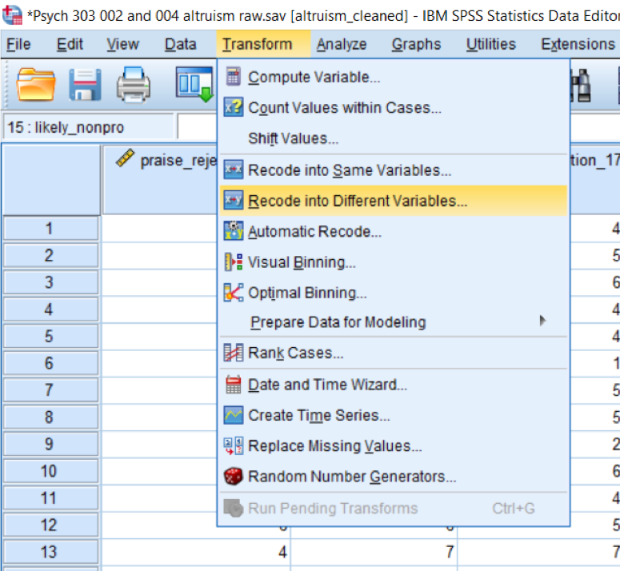 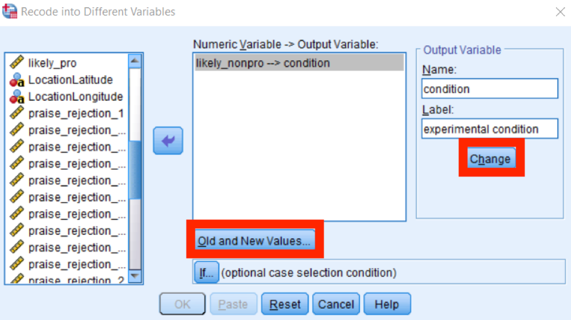It is very important to paste your work!! Pasting creates syntax: a record of what you are doing. This also means you could copy and paste the syntax and just replace the variable names if you needed to do one operation or analyses multiple times (for example if you have multiple DV’s.
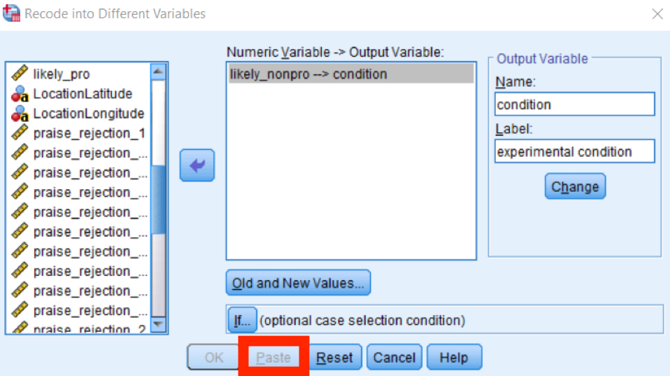Finally: Go to variable view and create value labels for your new condition variable so that -.5 = condition1 and .5=condition2
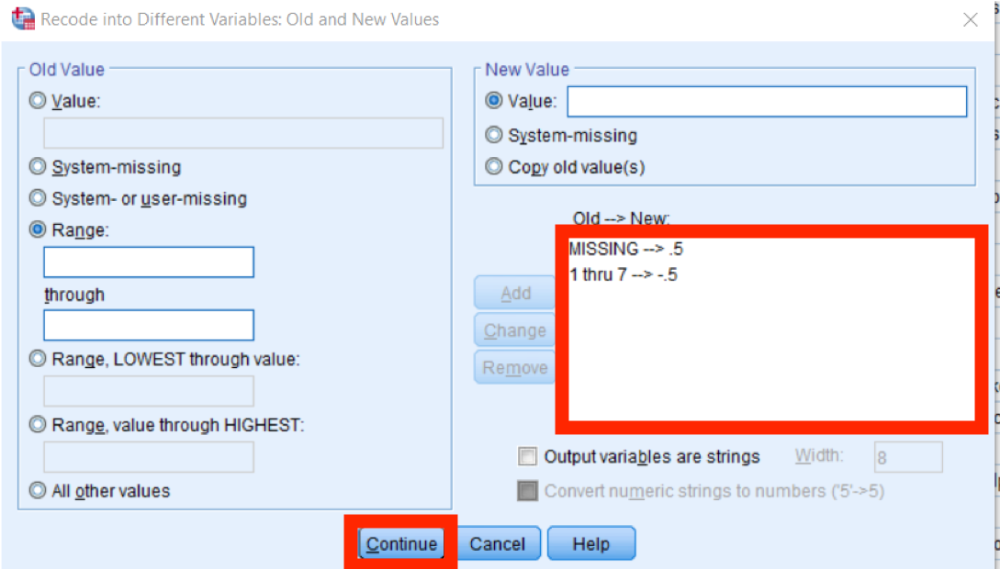Note: if you need to dummy code any categorical variable, this is the process you would use
Next, we "merge" the existing data columns columns:
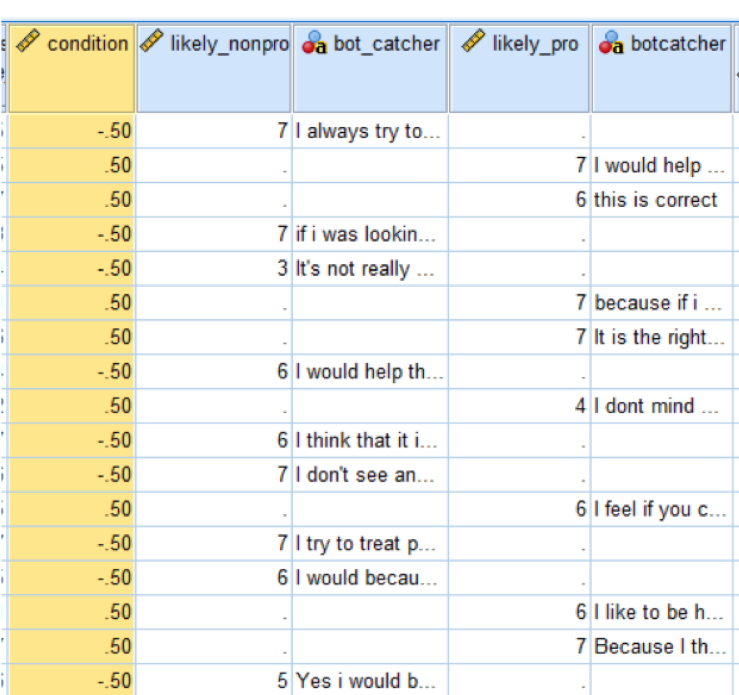 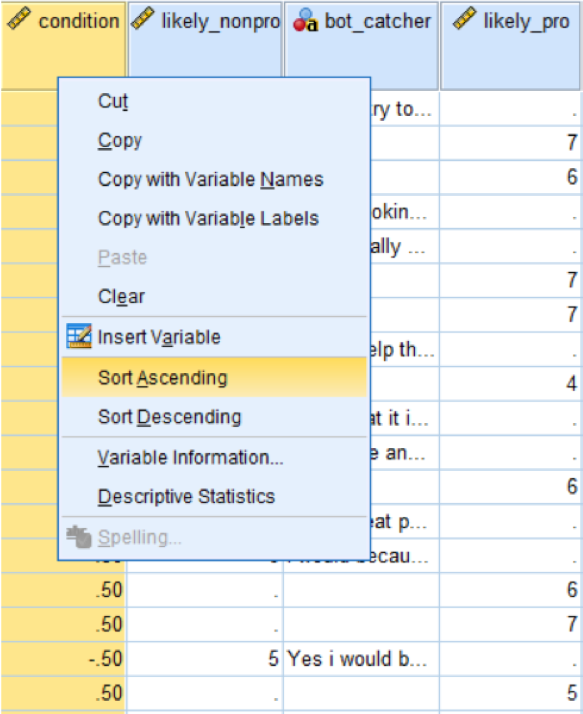 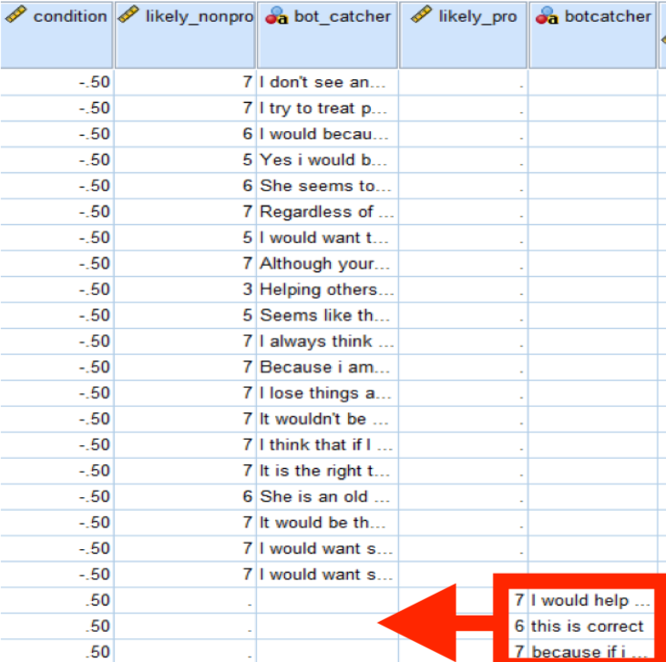Copy and paste the data from the columns that represent condition 1's data columns underneath condition 2's data. Next, copy the entire condition column including the variable name and then right click and select “insert variable” and “paste” into this new column
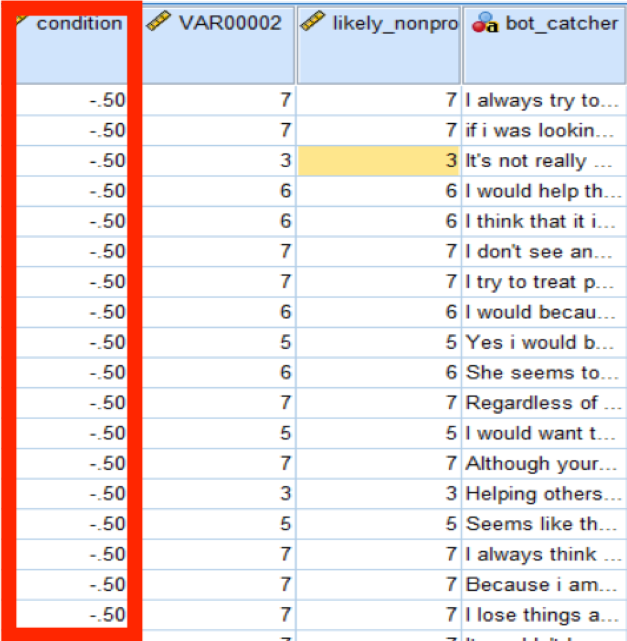Go to “variable view” and rename the new variable we just created according to the concept it represents by clicking on the variable name and typing in the new column name.
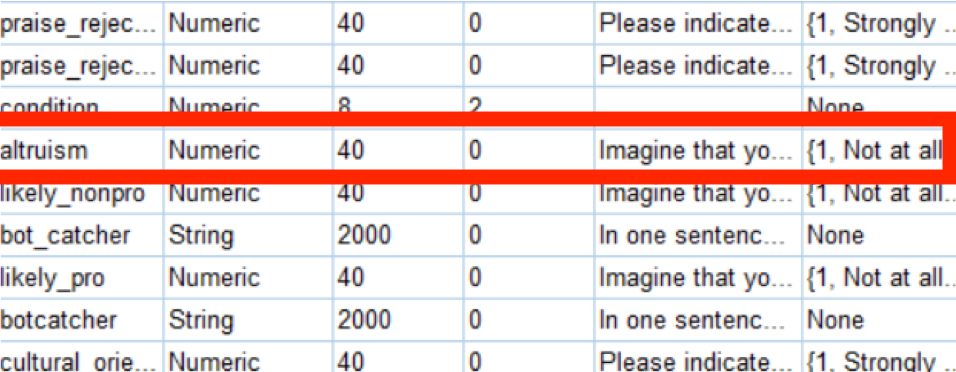Reverse coding scales
So we don't always need to use this technique, but we will still demonstrate it here. You would use reverse coding if, in a scale with multiple questions, the answers for different questions that would be consistent with one another are in reverse order from one another.
For example, if one of your scale questions was "Do you feel positively about your career prospects?" and another was "Do you feel negatively about your career prospects?". For both questions, participants have to answer on a likert scale from 1 (strongly agree) to 5 (strongly disagree). If someone answered "1" to the first question and is answering consistently, we would expect them to answer "5" to the second question, but these scores will mathematically cancel one another out in our analyses. So we systemically recode people's answers to the second question so anyone who answered "1" is marked "5", who answered "2" is marked "4", is marked "3" stays the same", "4" is marked "2" and "5" is marked "1" so answers are consistent and we can later check the internal reliability of our scale
First, we want to double check which variable needs reverse coding. Once you have identified which data variables represent the scale items you need to code, you can start the reverse code process in SPSS
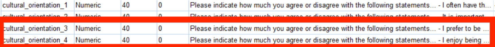 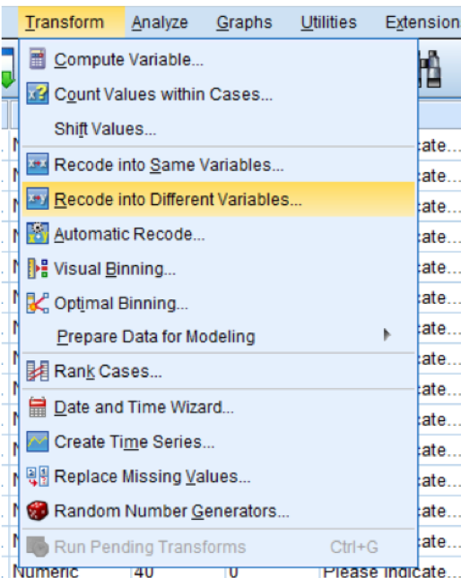 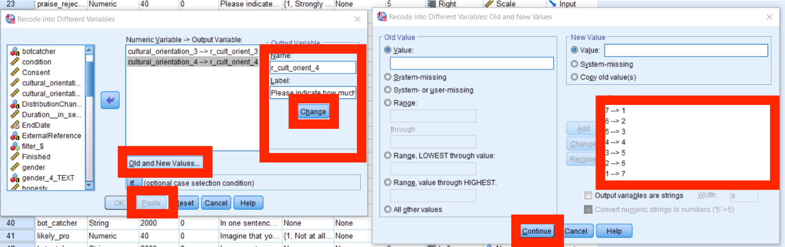Double check your reverse coding by comparing the numbers from the original variables to the numbers listed in the new variables
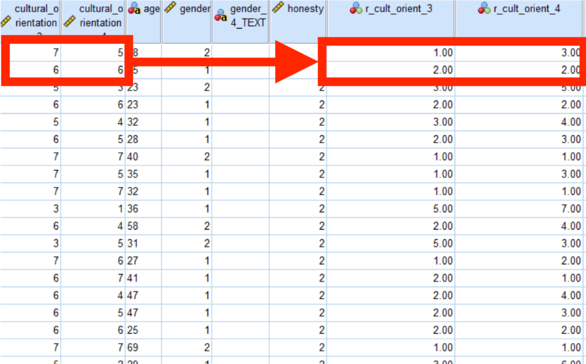Creating a new column with a calculation
If you've used a Likert scale with multiple questions as the operationalization of one of your conepts in your study, you will likely need to summarize that data into a single statistic using some predetermined formula (often a mean).
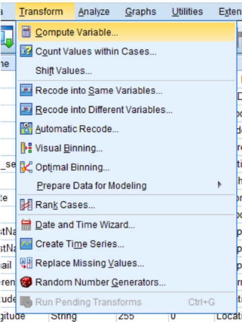 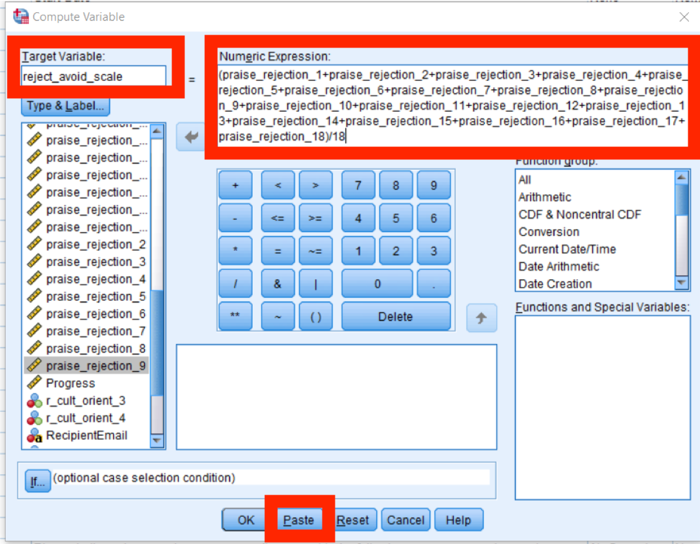Checking internal reliability
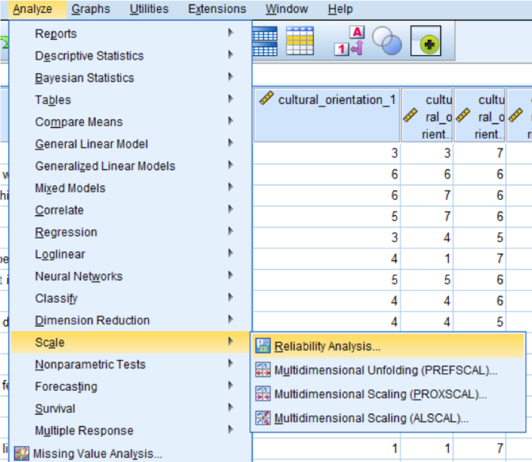TIP: If you click on the first item then hold down shift while you click on the last item that you want to include, SPSS will highlight every item in between for you so you can enter them in all at once instead of one at a time
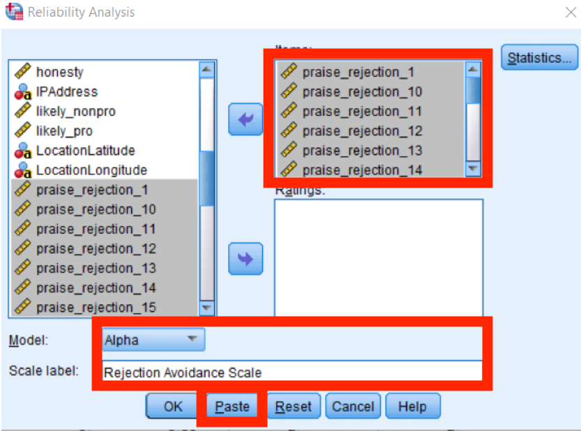Above .70 is good! Always be sure to do any necessary reverse coding before you perform a reliability analysis, too.
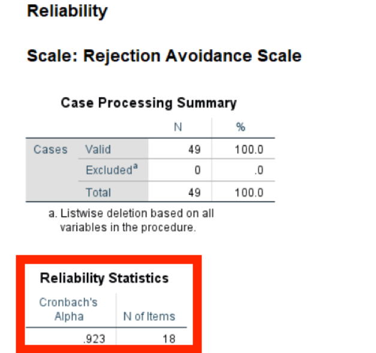